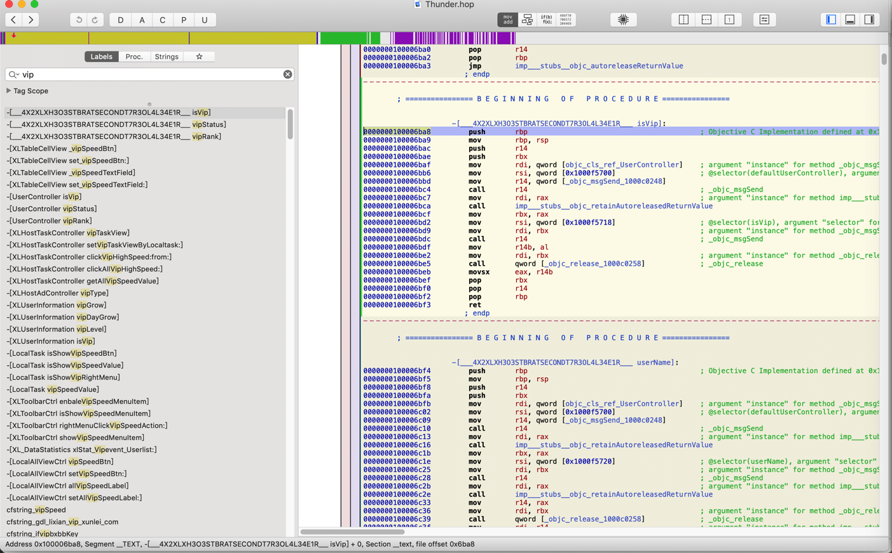
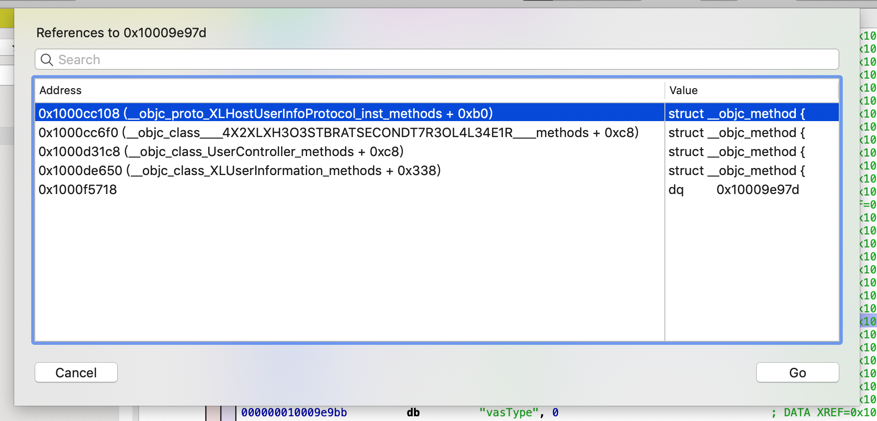

Hopper分析Thunder逻辑
对于Thunder迅雷的基本界面：

想要去研究其中对应的精选、搜索、应用之类的内容。
去搜：
search

第一个，看起来就是我们希望的要找的
-[XLRecycleToolbarController clickSearchSubtitleMenu:]:
点击搜索子菜单
-》那顶部的5个：
精选 正在下载 已完成 搜索 应用
就应该叫做 主菜单了
看了看代码：

也看不出什么头绪
十秒逆向九秒猜
再去找 精选
但是不知道英文如何翻译 精选 才能找到
不过想到了，去找类似的
SubtitleMenu
或
XLRecycleToolbarController click

只有其他的一些 但不是我们要的
也没有我们要的
搜：jingxuan，也没有。
再去找找其他的：application
找到：
00000001000c9558 dq ___CFConstantStringClassReference, 0x7c8, 0x1000b1a88, 0x16 ; "com.xunlei.plugin.page", DATA XREF=___56+[XLHostPageController __XS5H3XA3RXEDCO23XNT2RO4L3LER__]_block_invoke+55
cfstring_com_xunlei_plugin_page_applications:
00000001000c9578 dq ___CFConstantStringClassReference, 0x7c8, 0x1000b1ac7, 0x23 ; "com.xunlei.plugin.page.applications", DATA XREF=-[XLHostPageController plugin:loadSubPluginsForIdentifer:]+100
cfstring_Identifier:
-》或许还有其他的
com.xunlei.plugin.page.xxx
?
labels中没找到
不过发现strings中有一些：

不过其中的：
00000001000ab6a4 db "com.xunlei.embeddedplugin.view.webview", 0 ; DATA XREF=cfstring_com_xunlei_embeddedplugin_view_webview
反推，倒是很可能是此处的：精选

表示用webview 显示 精选内容
那再去搜搜：
com.xunlei.embeddedplugin.viewcom.xunlei.embeddedplugin
没有找到其他的
顺带看到一个 Tag Scope
是一个：好像是 内部的类 方法 函数 的列表
另外顺带看看：
Proc=Procedure=进程=函数- Strings
去看看app截图：
有下载未完成 待观看
或许能找到这些字符串？
当然如果加密了，是找不到的。
- 搜
下载：搜不到。 - 搜
未完成=uncomplete：搜到一些
继续：
- 搜
vip：还真能搜到些内容- 
很明显有些是相关内容：
isVip
vipStatus
vipRank
UserController isVip
UserController vipStatus
UserController vipRank
去看看：伪代码=pseudo code

再去找找String中是否有我们要的重要的内容

可以找到很多isVip相关的内容

有点看起来是：和user用户相关的各种属性
000000010009e96b db "nickName", 0 ; DATA XREF=0x1000cc0d8, 0x1000cc6c0, 0x1000d3120, 0x1000de3b0, 0x1000f5708
000000010009e974 db "imageUrl", 0 ; DATA XREF=0x1000d3198, 0x1000f5710
000000010009e983 db "userName", 0 ; DATA XREF=0x1000cc120, 0x1000cc708, 0x1000d3138, 0x1000de380, 0x1000f5720
继续找被调用的地方：

找到了几处：

如此，根据需求，继续深入研究，即可慢慢分析出自己要找的逻辑。